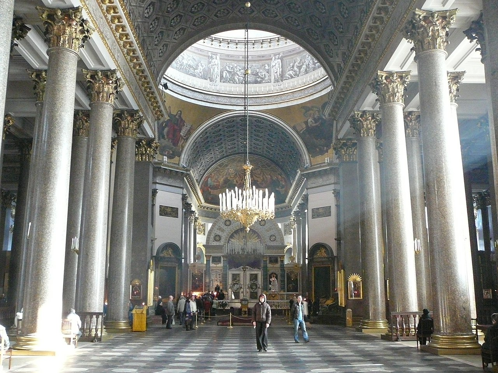
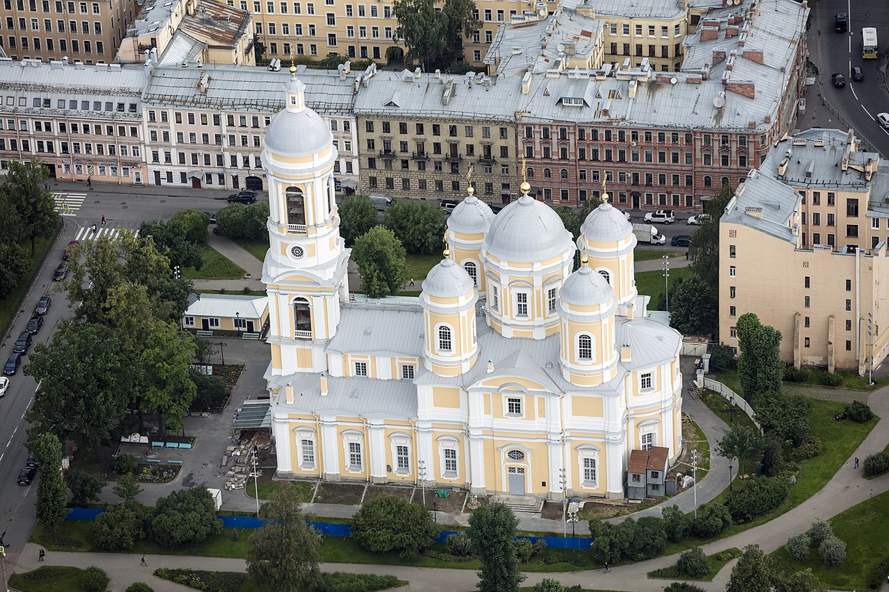
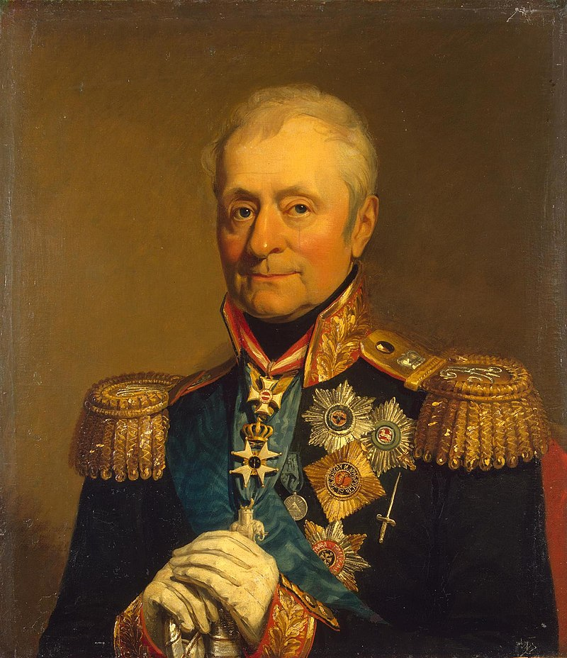
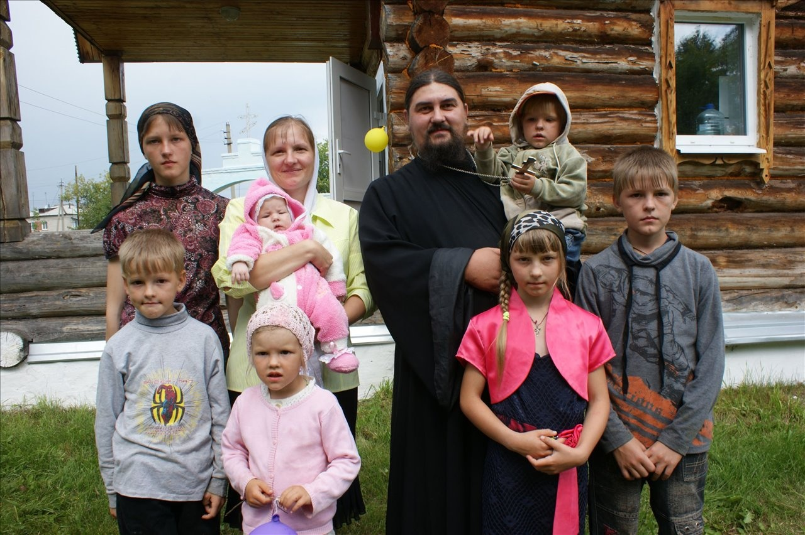
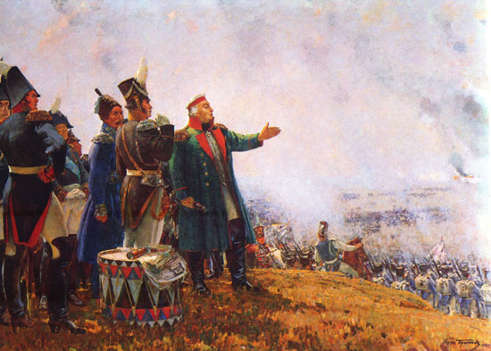
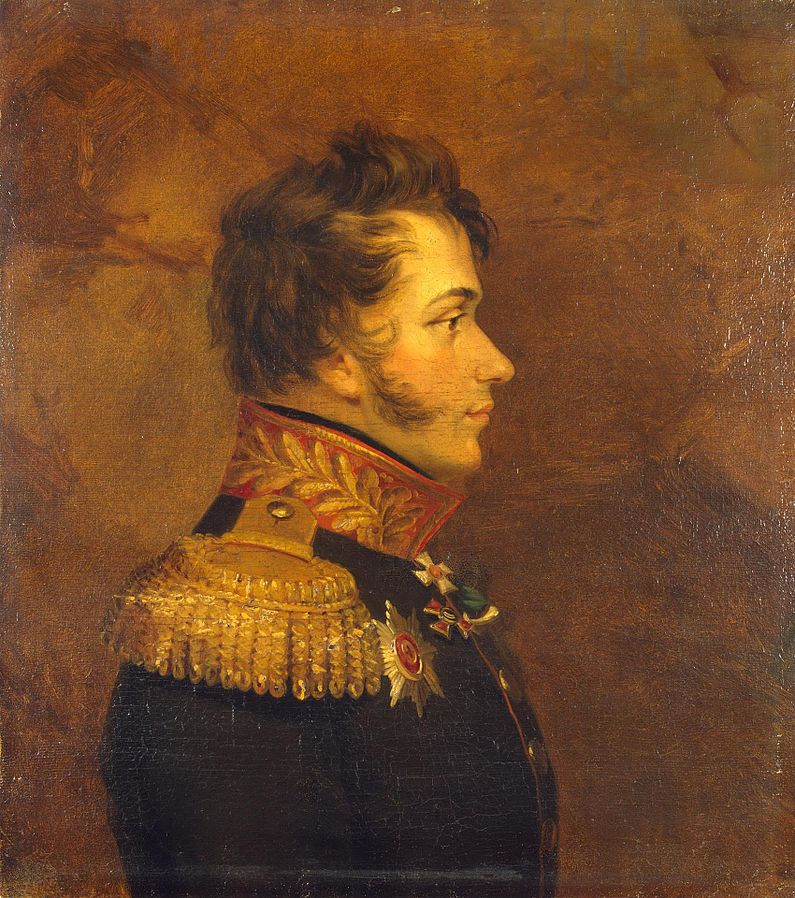
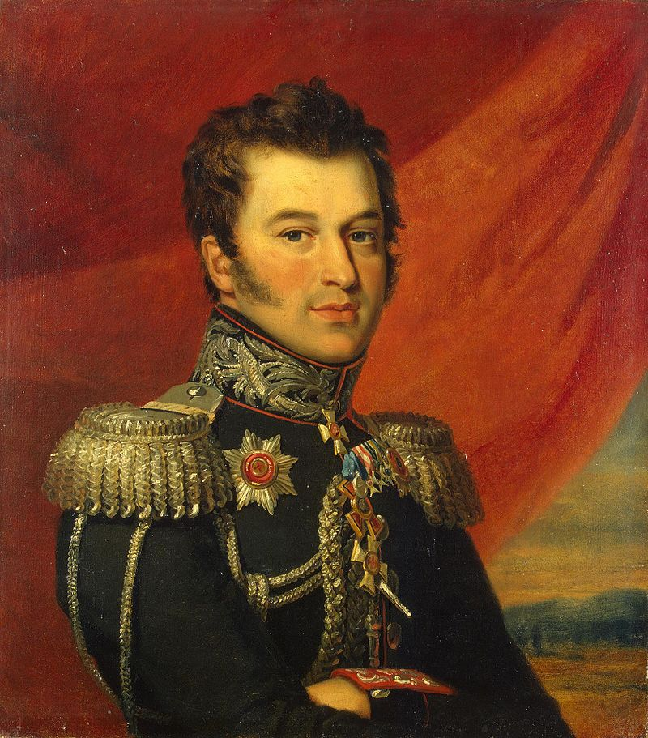

쿠투조프의 마성적 매력
게시: 2020-07-06T06:30:21+09:00
쿠투조프가 상트 페체르부르그에서 알렉산드르로부터 정식으로 야전군 총사령관의 임명장을 받은 것은 1812년 8월 20일이었습니다만, 하루가 급한 전시 상황에서도 쿠투조프는 당장 출발하지 않았습니다. 그가 임명장을 받고 나와서 한 최초의 일은 카잔 성당(Kazanskiy Kafedralniy Sobor, the Cathedral of Our Lady of Kazan)에 가서 훈장이 주렁주렁 달린 제복 코트를 벗고 성스러운 성모 마리아의 성상 앞에 무릎을 꿇은 채 눈물을 줄줄 흘리며 한참 동안 기도를 올렸습니다. 다음 날도 출발하지 않고, 이번에는 와이프까지 데리고 상트 블라디미르(St. Vladimir) 성당에 가서 역시 사람들이 지켜보는 가운데 경건하게 기도를 올렸습니다. 그러고도 부족했는지 임명장을 받은지 3일 뒤인 8월 23일 환호하는 시민들의 성대한 배웅 속에 출발하던 그는 다시 성당에 들러 경건하게 무릎을 꿇고 다시 긴 기도를 올렸습니다. 쿠투조프가 그렇게 경건한 러시아 정교 신자였는지 그가 신을 얼마나 믿었는지는 잘 모르겠으나 이 모든 것이 러시아 국민들에게 '이 싸움은 성스러운 조국 러시아를 악마같은 나폴레옹이 이끄는 외국놈들로부터 지키기 위한 성전'이라는 인상을 주기에는 충분했습니다.

(상트 페체르부르그의 카잔 성당 내부입니다. 생각보다 엄청나게 크고 웅장합니다.)

(카잔 성당에 비하면 아담한 상트 블라디미르 성당입니다.) 이는 쿠투조프가 상황을 아주 잘 파악하고 있었다는 것을 보여줍니다. 러시아 야전군과 함께 있었던 클라우제비츠(Clausewitz)의 기록에 따르면 당시 입버릇처럼 '이 모든 것이 바클레이를 비롯한 독일 장군놈들 때문이다'라고 욕을 하던 러시아들도 실제로 독일계 러시아 장교들의 배신 행위가 있었다고는 믿지 않았다고 합니다. 다만 이 전쟁의 지휘를 외국인이 하는 것에 대해서 러시아를 수호하는 성령들이 분노하고 있다는 막연한 믿음이 팽배했다고 적었습니다. 쿠투조프는 왜 자신이 총사령관으로 선출되었는지 잘 알고 있었고, 그런 상황에서 러시아 정교를 믿는 진짜배기 러시아 사내가 전선으로 간다는 것을 쇼우 형태로 보여줄 필요가 있다고 판단했던 것 같습니다. 물론 그렇다고 임명장을 받은지 3일 동안이나 지체할 필요는 없었습니다. 그건 순수하게 쿠투조프의 게으름 때문이었던 것 같습니다. 그의 당번 장교였던 마이에프스키(Maievsky) 대위도 쿠투조프의 게으름과 저질 체력에 대해서는 랑쥬롱 장군과 일치하는 의견을 기록으로 남겼습니다. "쿠투조프에게는 단어 10개짜리 문장 하나를 적는 것이 다른 사람이 100페이지를 적어내려가는 것보다 더 어려워 보였다. 심한 통풍, 노령의 나이, 그리고 원래 그런 서류 작업에 익숙치 않다는 점들이 그가 펜을 들지 못하게 하는 원인이었다." 당시 쿠투조프는 67세였으니 야전에서 거친 생활을 하기에는 확실히 좀 늦은 나이이기는 했습니다. 그러나 꼭 그렇지만도 않은 것이, 같은 해인 1745년 2월 생인 베니히센(Levin August von Bennigsen)은 이미 활발하게 러시아 야전군을 따라다니며 바클레이에게 온갖 오지랍을 다 떨 뿐만 아니라 부지런히 펜대를 놀려 알렉산드르를 포함한 고위 인사들에게 바클레이를 짜르고 자신을 그 자리에 앉히라고 열심히 운동을 벌이고 있었습니다. 쿠투조프는 누구나 다 인정하는 뚱보였으나 초상화를 보면 베니히센은 꽤 마른 스타일이었는데, 확실히 비만은 사람을 피곤하게 했던 모양입니다. 그나마 같은 1745년 생이지만 쿠투조프는 베니히센보다 반년 이상 느린 9월 생이었습니다. 하지만 베니히센이 몸과 마음이 모두 기민했는지 몰라도, 눈치와 상황 판단은 영 아니였습니다. 당시 러시아의 분위기는 누가 뭐래도 러시아계 장군을 원했지 독일계 장군은, 설령 프리드리히 대왕이 살아돌아와 이력서를 낸다고 해도 총사령관 자리에 오를 수가 없었습니다. 그럼에도 불구하고 베니히센은 자리를 결국 꿰어차기는 했습니다. 여론에 떠밀려 마지 못해 쿠투조프를 총사령관으로 임명한 알렉산드르는 쿠투조프가 얼마나 게으르고 무기력한 인간인지 잘 알고 있었기 때문에, 일종의 마스코트로 쿠투조프를 앉히더라도 실무를 책임져줄 장군은 따로 필요하다고 본 것입니다. 그래서 쿠투조프에게 '베니히센을 참모장으로 임명한다'는 임명장도 함께 들려서 보냈던 것입니다.

(전에도 언급했지만 알렉산드르는 바클레이의 후임으로 베니히센을 원했습니다. 실제로도 유럽의 모든 장군들 중에서 1812년 직전까지 나폴레옹을 애먹인 지휘관은 카알 대공과 베니히센 뿐이었지요.)
이 둘은 공교롭게도 어느 역참에서 딱 마주쳤습니다. 부지런한 베니히센은 '편지질로 구직 활동하는 것은 한계가 있다'라고 판단하고는 아예 말을 달려 알렉산드르가 있는 상트 페체르부르그로 달려오고 있었던 것입니다. 쿠투조프 휘하의 참모장으로 일하라는 임명장을 받아든 베니히센은 몹시 불쾌했지만 어쩔 수가 없었습니다. '내가 왕년에 나폴레옹과 아일라우에서 맞장을 뜨던 인물인데 이제 이런 뚱땡이 밑에서 서기 노릇이나 하라는 것이 말이 되나?' 라는 것이 당시 심정이었다고 베니히센은 나중에 회고록에 적었습니다. 바클레이도 불쾌하기는 마찬가지였습니다. 그는 알렉산드르에게 따로 편지를 보내 '차라리 모든 군직에서 물러나겠다'라고 요청했으나 결국 쿠투조프 밑에서 계속 복무해야만 했습니다. 베니히센과 바클레이 같은 독일계 장군들만 쿠투조프의 임명에 반발했던 것은 아니었습니다. 쿠투조프가 어떤 인물인지 잘 아는 고위 장군들 중에는 '이거 어쩌려고 저런 사람을 임명했나'라며 혀를 차는 사람들이 꽤 있었습니다. 가장 황당함을 느낀 것은 바그라티온이었습니다. 그가 여태까지 '이 모든 것이 바클레이 때문이다'라는 유행어를 열심히 유포시키고 바클레이 낙천 운동을 벌였던 것은 바로 자신이 총사령관이 되기 위함이었는데, 어디서 늙다리 뚱땡이가 떼굴떼굴 굴러온 것입니다. 그는 모스크바 시장이자 자신의 뒷배인 로스톱친(Rostopchin)에게 또 편지를 보내 '바클레이를 쿠투조프로 교체하는 것은 사제를 수습사제(deacon)로 교체하는 것이나 다름없고, 마치 불을 내주고 대신 프라이팬을 얻어오는 짓'이라며 분노를 터뜨렸습니다. 그러나 어쩔 수 없었습니다. 무엇보다도, 쿠투조프는 하급 장교들과 사병들로부터 엄청난 인기와 지지를 받고 있었습니다. 그가 차레보(Tsarevo-Zaimishche)라는 마을 근처에 진을 치고 있던 러시아 야전군에 마침내 당도하자, 바그라티온 등 일부 고위 장성을 제외한 전체 병영이 마치 산타클로스라도 온 것처럼 신이 나서 열광했습니다. 수보로프 장군의 제자라고 할 수 있었던 쿠투조프는 당시 러시아 장군들과는 달리 일반 사병들의 건강과 복지에 꽤 신경을 많이 쓰는 사람이었거든요. 여태까지 근엄한 표정만 지으며 하찮은 사병들과는 말도 섞지 않았던, 아니 러시아어를 잘 몰라서 말을 섞을 수 없었던 거만한 독일계 장군들과는 달리 쿠투조프는 수다스럽게 졸병들과도 농담을 주고 받고 부하 장교들을 익살스러운 별명으로 부르며 매력을 온 병영에 뿌렸습니다. 가끔씩 화가 날 때면 점잖지 못한 쌍욕까지도 했는데 그런 것까지 모두 그의 소탈함으로 받아들여져 인가가 폭발적이었습니다. 그는 사병들 사이에서는 바츄쉬카(Batiushka)라는 별명으로 불렸는데, 이는 '결혼한 사제 또는 작은 아빠' 정도의 뜻이었습니다. 연이은 패배와 이해할 수 없는 후퇴에 사기가 저하되어 있던 사병들은 쿠투조프의 인자하게 웃는 얼굴을 보고 신이 나서, 숙영지에서의 하찮은 사역까지도 활기차게 수행할 정도였습니다.

(러시아 정교회 사제들에는 삭발승과 일반승이 있는데, 삭발승이 아니라면 결혼해서 가정을 꾸리는 것이 일반적이라고 합니다. 원래 러시아 정교회에서 생각하는 가족은 저렇게 많은 자녀를 낳아서 키우는 것이라고 하네요. 그런데 러시아의 오늘날은 인구감소가 심각하지요. 굳이 남의 나라 이야기할 필요도 없이 원래 우리나라도 전통적으로는 흥부처럼 애를 주렁주렁 낳는 것을 좋게 보았지만 지금이야 뭐...) 쿠투조프의 이런 소탈함은 모두 계산된 것에 가까왔습니다. 그는 원래 성격이 게을러서 그런 것도 있겠지만 으리으리한 장군의 제복 대신 일부러 소탈하다 못해 다소 지저분한 녹색 프록코트와 하얀 둥근 모자 차림으로 다녔습니다. 그러면서도 그 프록코트에 그동안 모아온 훈장을 빠짐없이 다 달고 다녔습니다. 또한 그가 내리는 명령은 다른 독일계 러시아 장군들처럼 완벽한 문법의 프랑스어로 구술되었고, 그와 좀더 깊은 이야기를 나눠 본 사람은 그가 상당히 유식하고 세련된 사람이라는 것을 금방 알아차릴 수 있었습니다.

(나폴레옹에게 회색 코트와 검은 삼각모가 있다면 쿠투조프에게는 녹색 코트와 흰색 둥근 모자가 있었습니다. 당대 명지휘관들도 스티브 잡스 못지 않게 이미지 메이킹에 많은 노력을 들였습니다.)
그러나 이렇게 매력을 뿜뿜 발사하는 것과는 달리, 그의 지휘는 좋게 말해서 유연했고 나쁘게 말하면 체계가 완전 실종된 상태였습니다. 그의 명령은 전달되는 방식에 있어서나 내용에 있어서나 일관성이 전혀 없었습니다. 미리 정해진 참모나 수행 장교를 통해서 명령이 내려지는 것이 아니라, 곁에 있는 아무에게나 그냥 명령을 전달시키도록 했습니다. 그래도 내용에 일관성이 있으면 좋겠는데, 그 내용도 오전에 A 대위를 통해 내려진 명령과 오후에 B 대령을 통해 내려진 명령이 서로 상충되는 경우가 꽤 있었습니다. 군대에서 명령은 정말 명확 간결하여 오해의 소지가 전혀 없어야 하는 것이 생명인데, 이런 식이면 정말 곤란했습니다.
이는 일부 오해가 섞인 부분이 있었습니다. 전에 랑쥬롱 장군이 악평을 늘어놓은 것처럼, 쿠투조프는 워낙 게으르고 무기력해서 그의 부하들이 뭐라고 명령서를 가져오든 제대로 읽지도 않고 그냥 서명해버리는 경우가 많았습니다. 그렇게 쿠투조프의 이름으로 나간 명령서는 주로 세 사람이 관여해서 만들었는데, 바로 그의 불만 많은 참모장 베니히센, 그리고 그의 즉흥적인 사위 니콜라이 쿠다쉐프(Nikolai Kudashev) 대공, 그리고 바클레이의 평가에 따르면 '자기가 야전군 전체를 지휘할 역량이 있다고 착각하는 자신만만한 쫄보' 카이사로프(Paisi Kaisarov) 대령이었습니다. 이 셋이서 서로 경쟁하며 제멋대로 명령서를 남발해대니 오전에 내렸던 명령과 오후에 내렸던 명령이 서로 앞뒤가 맞지 않는 것이 당연했습니다.

(쿠투조프에게는 아들이 없었습니다. 그의 사위 니콜라이 쿠다쉐프 대공입니다.)

(쿠투조프의 부관이었던 카이사로프 대령입니다. 그는 1805년 아우스테를리츠 전투에 22세의 젊은 소위로 참전했다가 큰 부상을 입었습니다. 그때 쿠투조프와 인연을 맺었는가 하면 그건 아니고 쿠투조프가 총사령관에 임명되기 직전인 1812년 6월에 그의 부관으로 임명되었습니다. 그는 바로 다음 해에 소장으로 승진하는 등 이후에도 출세가도를 달렸습니다.)
그런데 어차피 상관없었습니다. 쿠투조프 본인도 그때그때 마음이 자주 바뀌었거든요. 그래서 본인이 직접 내린 명령도 마치 서로 다른 사람들이 각기 내린 명령처럼 일관성이 전혀 없었습니다. 게다가 쿠투조프는 겉으로 보는 것처럼 그냥 사람좋은 할아버지가 아니라 상당히 영악하고 음흉한 구석이 있어서, 자신이 직접 동쪽으로 가라고 명령한 사단 휘하의 일부 연대에게는 그 사단장에게 아무 말도 하지 않고 서쪽으로 이동 명령을 내리는 비상식적인 행동을 자주 했습니다. 덕분에 휘하 장군들은 쿠투조프의 명령을 받으면 그냥 그대로 믿지 않고 항상 뭔가 꿍꿍이나 추가 정보가 없는지 촉각을 곤두세워야 했습니다.
이런 점도 긍정적인 측면이 있을 수는 있습니다. 그러나 군대란 정립된 명령 체계가 있어야 바로 선다고 믿었던 지휘관들에게는 쿠투조프의 지휘 때문에 미치고 환장할 지경이었습니다. 쿠투조프 밑에서 여전히 제1 야전군 지휘관 역할을 하던 바클레이가 특히 그랬고, 그 밑에서 참모 장교로 있던 클라우제비츠는 '쿠투조프의 저런 행동은 노망 때문이다'라고 굳게 믿었다고 합니다.
어쨌거나 러시아군은 그런 쿠투조프의 지휘 하에 이제 나폴레옹과 결전을 치러야 했습니다. 쿠투조프가 차레보(Tsarevo-Zaimishche)에서 러시아 야전군과 합류한 것도 전임 총사령관이자 현임 제1 야전군 사령관인 바클레이가 이 곳의 지형이 나폴레옹과의 결전에 가장 적합한 장소라고 판단했기 때문이었습니다. 냉철하고 유능한 바클레이가 그렇게 판단했던 지형이, 쿠투조프의 피곤한 왼쪽 눈에는 과연 어떻게 보였을까요 ?
Source : 1812 Napoleon's Fatal March on Moscow by Adam Zamoyski en.wikipedia.org/wiki/Kazan_Cathedral,_Saint_Petersburg
en.wikipedia.org/wiki/St._Vladimir%27s_Cathedral_(St._Petersburg)
en.wikipedia.org/wiki/Levin_August_von_Bennigsen www.byzcath.org/forums/ubbthreads.php/topics/374724/Batiushka
https://www.quora.com/Are-Eastern-Orthodox-priests-allowed-to-marry
http://mil.ru/et/war/more.htm?id=11207729 https://en.wikipedia.org/wiki/Paisi_Kaysarov